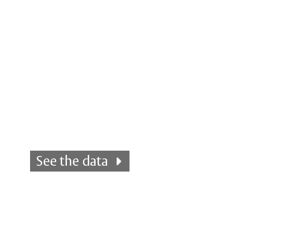
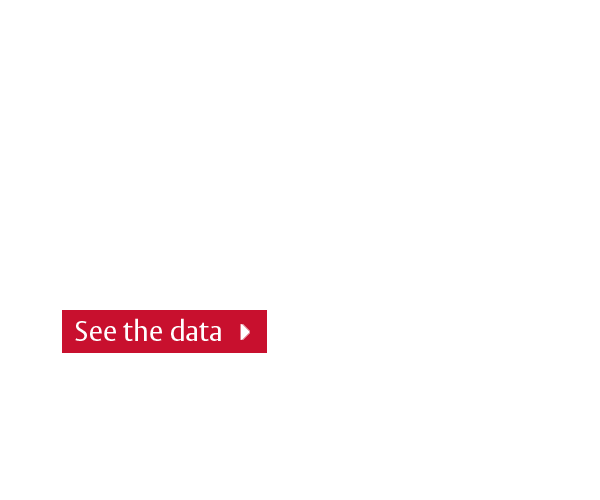
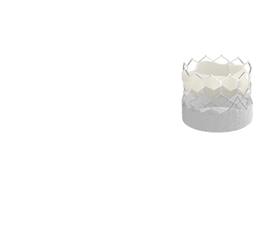
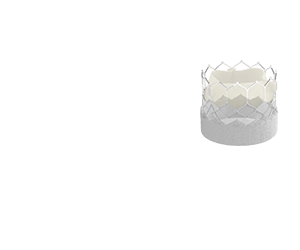
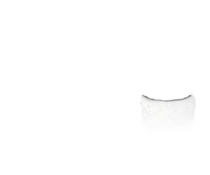

Edwards SAPIEN 3 THV System and Edwards SAPIEN 3 Ultra THV System
Indications: The Edwards SAPIEN 3 Transcatheter Heart Valve System and Edwards SAPIEN 3 Ultra Transcatheter Heart Valve System are indicated for relief of aortic stenosis in patients with symptomatic heart disease due to severe native calcific aortic stenosis who are judged by a Heart Team, including a cardiac surgeon, to be appropriate for the transcatheter heart valve replacement therapy.
The Edwards SAPIEN 3 Transcatheter Heart Valve System and Edwards SAPIEN 3 Ultra Transcatheter Heart Valve System are indicated for patients with symptomatic heart disease due to failure (stenosed, insufficient, or combined) of a surgical bioprosthetic aortic or mitral valve who are judged by a heart team, including a cardiac surgeon, to be at high or greater risk for open surgical therapy (i.e., predicted risk of surgical mortality ≥ 8% at 30 days, based on the STS risk score and other clinical co-morbidities unmeasured by the STS risk calculator).
Contraindications: The valves and delivery systems are contraindicated in patients who cannot tolerate an anticoagulation/antiplatelet regimen or who have active bacterial endocarditis or other active infections.
Warnings: Observation of the pacing lead throughout the procedure is essential to avoid the potential risk of pacing lead perforation. There may be an increased risk of stroke in transcatheter aortic valve replacement procedures, as compared to balloon aortic valvuloplasty or other standard treatments in high or greater risk patients. Incorrect sizing of the valve may lead to paravalvular leak, migration, embolization, residual gradient (patient-prosthesis mismatch), and/or annular rupture. Accelerated deterioration of the valve due to calcific degeneration may occur in children, adolescents, or young adults and in patients with an altered calcium metabolism. Prior to delivery, the valve must remain hydrated at all times and cannot be exposed to solutions other than its shipping storage solution and sterile physiologic rinsing solution. Valve leaflets mishandled or damaged during any part of the procedure will require replacement of the valve. Caution should be exercised in implanting a valve in patients with clinically significant coronary artery disease. Patients with pre-existing bioprostheses should be carefully assessed prior to implantation of the valve to ensure proper valve positioning and deployment. Do not use the valve if the tamper-evident seal is broken, the storage solution does not completely cover the valve, the temperature indicator has been activated, the valve is damaged, or the expiration date has elapsed. Do not mishandle the delivery system or use it if the packaging or any components are not sterile, have been opened or are damaged (e.g., kinked or stretched), or if the expiration date has elapsed. Use of excessive contrast media may lead to renal failure. Measure the patient’s creatinine level prior to the procedure. Contrast media usage should be monitored. Patient injury could occur if the delivery system is not un-flexed prior to removal. Care should be exercised in patients with hypersensitivities to cobalt, nickel, chromium, molybdenum, titanium, manganese, silicon, and/or polymeric materials. The procedure should be conducted under fluoroscopic guidance. Some fluoroscopically guided procedures are associated with a risk of radiation injury to the skin. These injuries may be painful, disfiguring, and long-lasting. Valve recipients should be maintained on anticoagulant/antiplatelet therapy, except when contraindicated, as determined by their physician. This device has not been tested for use without anticoagulation. Do not add or apply antibiotics to the storage solution, rinse solution, or to the valve. Balloon valvuloplasty should be avoided in the treatment of failing bioprostheses as this may result in embolization of bioprosthesis material and mechanical disruption of the valve leaflets. Failure to use slow, controlled inflation and prescribed nominal inflation volumes may result in balloon rupture, and lead to patient death or serious injuries associated with difficulty retrieving the delivery system and surgical intervention.
Precautions: Safety, effectiveness, and durability have not been established for THV-in-THV procedures. Long-term durability has not been established for the valve. Regular medical follow-up is advised to evaluate valve performance. Limited clinical data are available for transcatheter aortic valve replacement in patients with a congenital bicuspid aortic valve who are deemed to be at low surgical risk. Anatomical characteristics should be considered when using the valve in this population. In addition, patient age should be considered as long-term durability of the valve has not been established. Glutaraldehyde may cause irritation of the skin, eyes, nose, and throat. Avoid prolonged or repeated exposure to, or breathing of, the solution. Use only with adequate ventilation. If skin contact occurs, immediately flush the affected area with water; in the event of contact with eyes, seek immediate medical attention. For more information about glutaraldehyde exposure, refer to the Safety Data Sheet available from Edwards Lifesciences. To maintain proper valve leaflet coaptation, do not overinflate the deployment balloon. Appropriate antibiotic prophylaxis is recommended post-procedure in patients at risk for prosthetic valve infection and endocarditis. Additional precautions for transseptal replacement of a failed mitral valve bioprosthesis include, the presence of devices or thrombus or other abnormalities in the caval vein precluding safe transvenous femoral access for transseptal approach; and the presence of an Atrial Septal Occluder Device or calcium or abnormalities in the atrial septum preventing safe transseptal access. Special care must be exercised in mitral valve replacement if chordal preservation techniques were used in the primary implantation to avoid entrapment of the subvalvular apparatus. Safety and effectiveness have not been established for patients with the following characteristics/comorbidities: non-calcified aortic annulus; severe ventricular dysfunction with ejection fraction < 20%; congenital unicuspid aortic valve; pre-existing prosthetic ring in any position; severe mitral annular calcification (MAC); severe (> 3+) mitral insufficiency, or Gorlin syndrome; blood dyscrasias defined as leukopenia (WBC < 3000 cells/mL), acute anemia (Hb < 9 g/dL), thrombocytopenia (platelet count < 50,000 cells/mL), or history of bleeding diathesis or coagulopathy; hypertrophic cardiomyopathy with or without obstruction (HOCM); echocardiographic evidence of intracardiac mass, thrombus, or vegetation; a known hypersensitivity or contraindication to aspirin, heparin, ticlopidine (Ticlid), or clopidogrel (Plavix), or sensitivity to contrast media, which cannot be adequately premedicated; significant aortic disease, including abdominal aortic or thoracic aneurysm defined as maximal luminal diameter 5 cm or greater, marked tortuosity (hyperacute bend), aortic arch atheroma (especially if thick [> 5 mm], protruding, or ulcerated) or narrowing (especially with calcification and surface irregularities) of the abdominal or thoracic aorta, severe “unfolding” and tortuosity of the thoracic aorta; bulky calcified aortic valve leaflets in close proximity to coronary ostia; a concomitant paravalvular leak where the failing bioprosthesis is not securely fixed in the native annulus or is not structurally intact (e.g., wireform frame fracture); or a partially detached leaflet of the failing bioprosthesis that in the aortic position may obstruct a coronary ostium. For Left axillary approach, a left subclavian takeoff angle~ ≥ 90° from the aortic arch causes sharp angles, which may be responsible for potential sheath kinking, subclavian/axillary dissection and aortic arch damage. Ensure there is flow in Left Internal Mammary Artery (LIMA)/Right Internal Mammary Artery (RIMA) during procedure and monitor PA pressure in homolateral radial artery. Residual mean gradient may be higher in a “THV-in-failing bioprosthesis” configuration than that observed following implantation of the valve inside a native aortic annulus using the same size device. Patients with elevated mean gradient post procedure should be carefully followed. It is important that the manufacturer, model and size of the preexisting bioprosthetic valve be determined, so that the appropriate valve can be implanted and a prosthesis-patient mismatch be avoided. Additionally, pre-procedure imaging modalities must be employed to make as accurate a determination of the inner diameter as possible.
Potential Adverse Events: Potential risks associated with the overall procedure, including potential access complications associated with standard cardiac catheterization, balloon valvuloplasty, the potential risks of conscious sedation and/or general anesthesia, and the use of angiography: death; stroke/transient ischemic attack, clusters, or neurological deficit; paralysis; permanent disability; respiratory insufficiency or respiratory failure; hemorrhage requiring transfusion or intervention; cardiovascular injury including perforation or dissection of vessels, ventricle, atrium, septum, myocardium, or valvular structures that may require intervention; pericardial effusion or cardiac tamponade; thoracic bleeding; embolization including air, calcific valve material, or thrombus; infection including septicemia and endocarditis; heart failure; myocardial infarction; renal insufficiency or renal failure; conduction system defect which may require a permanent pacemaker; arrhythmia; retroperitoneal bleed; arteriovenous (AV) fistula or pseudoaneurysm; reoperation; ischemia or nerve injury or brachial plexus injury; restenosis; pulmonary edema; pleural effusion; bleeding; anemia; abnormal lab values (including electrolyte imbalance); hypertension or hypotension; allergic reaction to anesthesia, contrast media, or device materials; hematoma; syncope; pain or changes at the access site; exercise intolerance or weakness; inflammation; angina; heart murmur; and fever. Additional potential risks associated with the use of the valve, delivery system, and/or accessories include: cardiac arrest; cardiogenic shock; emergency cardiac surgery; cardiac failure or low cardiac output; coronary flow obstruction/transvalvular flow disturbance; device thrombosis requiring intervention; valve thrombosis; device embolization; device migration or malposition requiring intervention; left ventricular outflow tract obstruction; valve deployment in unintended location; valve stenosis; structural valve deterioration (wear, fracture, calcification, leaflet tear/tearing from the stent posts, leaflet retraction, suture line disruption of components of a prosthetic valve, thickening, stenosis); device degeneration; paravalvular or transvalvular leak; valve regurgitation; hemolysis; device explants; nonstructural dysfunction; mechanical failure of delivery system and/or accessories; and non-emergent reoperation.
Edwards Axela Sheath
Indications: The Edwards Axela sheath is indicated for the introduction and removal of devices used with the Edwards SAPIEN 3 Ultra delivery system.
Contraindications: There are no known contraindications.
Warnings: The devices are designed, intended, and distributed for single use only. Do not resterilize or reuse the devices. There are no data to support the sterility, nonpyrogenicity, and functionality of the devices after reprocessing.
Precautions: Caution should be used in vessels that have diameters less than 5.5 mm as it may preclude safe placement of the 14F Edwards Axela sheath. For subclavian/axillary vessels with the 29 mm Edwards SAPIEN 3 Ultra delivery system, caution should be used in vessels that have diameters less than 6.0 mm as it may preclude safe placement of the 14F Edwards Axela sheath. Use caution in tortuous or calcified vessels that would prevent safe entry of the sheath. Do not use the Edwards Axela sheath if the packaging sterile barriers and any components have been opened or damaged or the expiration date has elapsed. When inserting, manipulating or withdrawing a device through the sheath, always maintain sheath position. When puncturing, suturing or incising the tissue near the sheath, use caution to avoid damage to the sheath.
Potential Adverse Events: Complications associated with standard catheterization and use of angiography include, but are not limited to, injury including perforation or dissection of vessels, thrombosis and/or plaque dislodgement which may result in emboli formation, distal vessel obstruction, hemorrhage, infection, and/or death.
Edwards Crimper
Indications: The Edwards crimper is indicated for use in preparing the Edwards SAPIEN 3 Ultra transcatheter heart valve and the Edwards SAPIEN 3 transcatheter heart valve for implantation. Contraindications: There are no known contraindications.
Warnings: The devices are designed, intended, and distributed for single use only. Do not resterilize or reuse the devices. There are no data to support the sterility, nonpyrogenicity, and functionality of the devices after reprocessing.
Precautions: For special considerations associated with the use of the Edwards crimper prior to THV implantation, refer to the THV Instructions for Use. Potential Adverse Events: There are no known potential adverse events associated with the Edwards crimper.
CAUTION: Federal (United States) law restricts these devices to sale by or on the order of a physician.
Edwards, Edwards Lifesciences, the stylized E logo, Axela, Edwards SAPIEN, Edwards SAPIEN 3, Edwards SAPIEN 3 Ultra, SAPIEN, SAPIEN 3, and SAPIEN 3 Ultra are trademarks of Edwards Lifesciences Corporation or its affiliates. All other trademarks are the property of their respective owners.
© 2020 Edwards Lifesciences Corporation.
All rights reserved. PP--US-5272 v1.0
Edwards Lifesciences • edwards.com
One Edwards Way, Irvine CA 92614 USA